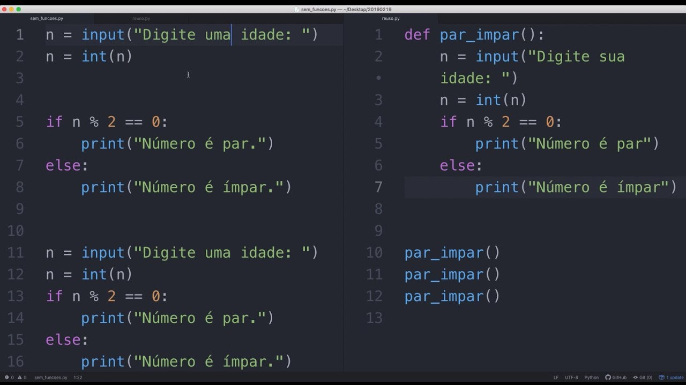

Seguem os tópicos:
Python é uma linguagem Open Source de proósito geral usado bastante em data science, machine learning, desenvolvimento web, desenvolvimento de aplicativos, automação de scripts, fintechs e mais.
VoltarA linguagem Python permite que você trabalhe com data science e machine learning, e em muitas outras áreas que hoje em dia são essenciais nas organizações de grande porte. É uma linguagem ágil, fácil e objetiva, o que democratiza seu ensino e a faz ser procurada cada vez mais.
Voltar
Exemplo de código básico para descobrir se um número é impar ou par (Python)

Voltar